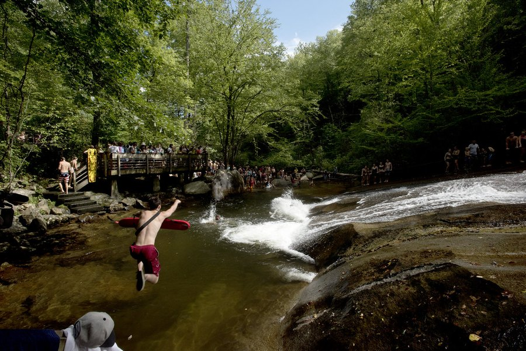

Cold Water Therapy and Brain Health: What the Evidence Actually Says
Cold water immersion produces real physiological changes. But does the science support the bold claims circulating online? Here's an honest look at what's proven and what isn't.

Key takeaways
- Norepinephrine surge: cold water immersion reliably triggers a spike in this alertness neurotransmitter within seconds.
- Mood signal: some small trials find that regular cold exposure reduces depressive symptoms, which indirectly supports cognition.
- Memory evidence is thin: direct human data on cold water and memory recall is limited; much of the compelling research used animal models.
- Anti-inflammatory pathway: repeated cold exposure may lower systemic inflammation, a recognized driver of long-term cognitive decline.
- Not for everyone: cold water is a genuine physiological stress; people with heart or vascular conditions need medical clearance before trying it.
If you've seen cold plunges described as a brain upgrade, you're not imagining the hype. Ice baths, cold showers, and open-water swimming have all been credited with sharper focus, better mood, and even improved memory. Some of that lines up with real physiology. Some of it doesn't. Cold water therapy and brain health share a genuine connection, mainly through norepinephrine, vagal stimulation, and inflammation, but the evidence for direct memory benefits is thinner than the social media accounts suggest. Here's what the research actually supports.
What happens to your brain the moment you enter cold water?
The response is rapid. Within seconds, cold water activates the sympathetic nervous system, and norepinephrine floods the brain. This neurotransmitter plays a central role in attention, alertness, and arousal. Some research has documented norepinephrine increases of 200–300% with brief cold water exposure at temperatures around 14°C (57°F). That explains the immediate sense of mental clarity many people report.
Cortisol also rises in the short term. This sounds counterintuitive, because chronic cortisol elevation is well-documented as harmful to memory. But a brief, controlled stress response is categorically different from the grinding, low-grade cortisol load that erodes the hippocampus over time. The distinction matters.
There's also a vagal component. Cold water on the face and neck stimulates the vagus nerve, which runs from the brainstem through the body and serves as the main conduit of the parasympathetic nervous system. Vagal activation slows the heart rate, lowers blood pressure, and produces a calming counter-signal to the initial sympathetic spike.
Does cold water therapy actually improve memory?
This is where honest reporting matters. The alertness boost after cold exposure is real. Whether it translates to lasting memory improvement is a different question.
Most of the compelling mechanistic data comes from animal models, where cold exposure and the downstream effects of norepinephrine have been linked to hippocampal function and neuroplasticity. Human trials are smaller, harder to control, and often confounded. Studies that have followed cold-water swimmers, for example, frequently can't separate the effects of cold exposure from the effects of regular aerobic exercise, time outdoors, and social connection, all of which independently support brain health. For a broader look at the strategies with the strongest human evidence, see our guide to how to improve memory.
A systematic review published in 2020 concluded that evidence for cold water immersion improving cognitive performance in healthy adults remains preliminary and largely based on indirect mechanisms. That's a fair summary of where the science stands today.
What about inflammation? Is that where the long-term benefit lies?
Possibly. Chronic low-grade inflammation is increasingly recognized as a driver of cognitive decline and dementia risk. Some research has found that regular cold water exposure reduces circulating inflammatory markers, including certain interleukins and cytokines. If those findings hold up in larger trials, the mechanism for long-term brain protection becomes more credible.
This isn't a dramatic, fast-acting effect. It's more likely to matter over months and years of consistent practice, in the same way that regular exercise protects the brain partly through inflammation reduction. The cold water effect here is plausible, not proven, at scale. Worth knowing about. Worth not overstating.
Chronic stress is another angle worth considering, because it measurably damages memory over time. Regular cold exposure, through vagal stimulation and the practiced tolerance of discomfort, may help build a more resilient stress response. See our breakdown of how stress affects memory for more on that connection.
COMPLEX
The memory formula we rate highest in 2026
Cold water is one input. For nutritional support, one formula combined citicoline, bacopa, phosphatidylserine and B-vitamins with a fully transparent label and a 60-day guarantee.
See Today's Price →Cold showers vs. full immersion: does the method matter?
Yes, considerably. Cold showers and full-body immersion in a tub or open water are not the same stimulus. Immersion exposes a much larger body surface area to cold, triggering a stronger systemic response. Most research that shows meaningful physiological effects has used immersion, typically at temperatures between 10°C and 15°C (50–59°F), for 2–10 minutes.
Cold showers can still trigger a mild norepinephrine response and some vagal stimulation, especially if you direct cold water to the face and neck. They're a reasonable starting point. Just don't assume they produce effects equivalent to immersion based on the current evidence base, because the trials are testing different things.
Who benefits most, and who should be cautious?
Cold water therapy is not universally safe. People with heart disease, arrhythmias, uncontrolled high blood pressure, or Raynaud's disease should get medical clearance before any form of cold immersion. The cold shock response raises heart rate and blood pressure abruptly. In a healthy person, this normalizes within seconds. In someone with cardiovascular disease, the same response can precipitate a serious cardiac event.
Pregnant women, those with certain autoimmune conditions, and older adults starting from a sedentary baseline should also seek guidance before trying it.
For everyone else, gradual exposure is the sensible route. Starting with a 30-second cold rinse at the end of a warm shower, then slowly extending duration and reducing temperature over several weeks, gives the body time to adapt. The discomfort is real. It does get easier.
What does the research still not tell us?
Plenty. The optimal protocol for cognitive benefit remains unknown. We don't have good data on temperature, duration, or frequency targets. We don't know whether effects persist long-term or attenuate as the body adapts. Open-water swimming studies are confounded by exercise and sunlight. Ice bath studies are often small and short-term.
What we can say: cold water produces real physiological changes, some of which are plausibly relevant to how well the brain functions over time. Combined with regular aerobic exercise, consistent sleep, and adequate nutrition, cold exposure may be a useful addition for some people. On its own, the data doesn't support the wilder claims about memory and cognition you'll find in social media posts. As with most things in brain health, the fundamentals come first.
Frequently asked questions
Does cold water therapy improve brain function?
Cold water exposure sharpens alertness quickly through a norepinephrine surge, and some small trials suggest mood benefits from regular practice. Direct evidence for improved memory in healthy adults is limited; most strong findings come from animal models or studies that mix cold water with aerobic exercise. The signal is real but the claims often outrun the data.
How does cold water affect the brain?
Immersion in cold water triggers the release of norepinephrine, a neurotransmitter central to focus and alertness. It also activates the vagus nerve, which has a broad calming effect on the nervous system, and may reduce chronic low-grade inflammation over time, a recognized driver of cognitive decline.
Is a cold shower good for memory?
There is no strong clinical evidence that cold showers directly improve memory in healthy people. They may improve alertness and mood in the short term, which can indirectly support recall. But the evidence for a direct memory benefit is thin; most of the research has used full-body immersion, not showers.
Are there risks to cold water therapy?
Yes. Cold water immersion triggers a cold shock response that raises heart rate and blood pressure abruptly. People with heart conditions, Raynaud's disease, or uncontrolled hypertension should consult a doctor before trying it. Gradual exposure is safer than starting with very cold water for extended periods.
Want to support your brain more broadly?
Cold water is one piece of the puzzle. The core work is sleep, exercise, and consistent nutrition. See the memory formulas our editors rate highest for 2026.
See the Top 5 Memory Formulas →Related: How stress affects memory · Exercise and brain health · Sleep and memory · Best memory formulas of 2026